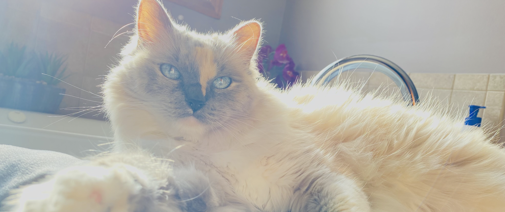

Ziva is a ragdoll cat; we believe she was born in 2015. Ziva should be turning 10 years old sometime this year. We do not know the exact age of her since we adopted her back in 2019. She is a great work companion despite being very vocal at times and acting like a princess. She loves to lie on her fancy cardboard couches. Her favorite cat treats are the Sheba Meaty Tender Sticks, and whenever she hears a crinkle she is always there to investigate. One of Ziva's favorite place to go in the house is the basement. She also doesn't like closed doors.
Go back to the main page